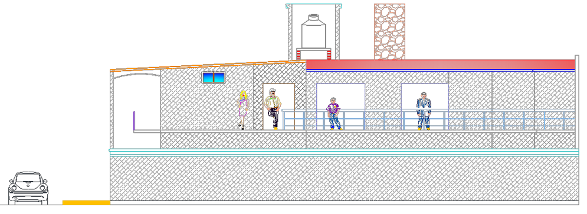
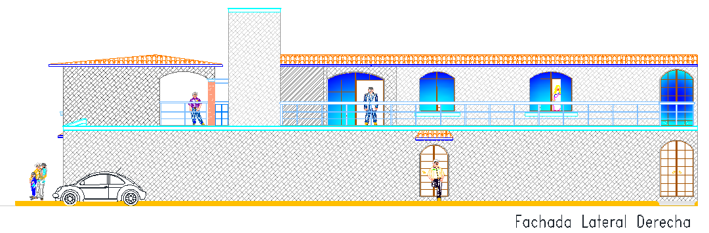
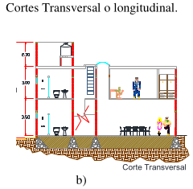
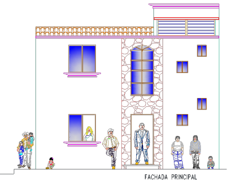
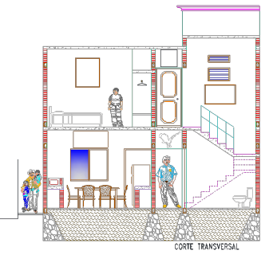
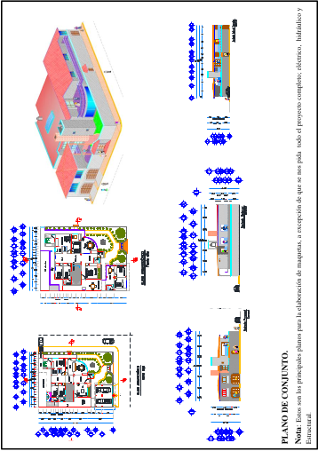
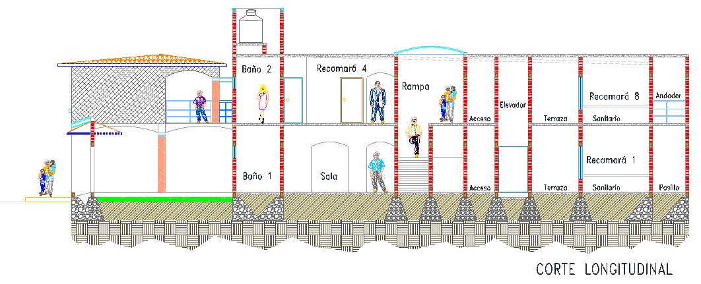

CAPÍTULO III
La Planometría en el Arte del Maquetismo
El plano no es solo un dibujo; es la guía técnica definitiva. En este capítulo, aprenderemos a leer las líneas y símbolos que darán vida a tu modelo tridimensional.
Para el autor Ignacio López Torres, la interpretación de planos es el paso más crítico. Una lectura errónea de una cota o un eje puede significar que las piezas de cartón batería no encajen al final del proceso. Debemos ver el plano como una radiografía del proyecto.
3.1 Plantas Arquitectónicas
La planta es la base de todo. Representa una sección horizontal del edificio. Para el maquetista, es esencial para:
- Trazado de Muros: Determinar dónde irán pegadas las paredes.
- Ubicación de Vanos: Marcar exactamente dónde se cortarán ventanas y puertas.
- Distribución Interna: Entender el flujo de los espacios para maquetas desmontables.

3.2 Fachadas y Alzados
Las fachadas nos dan la información vertical. Sin ellas, no sabríamos a qué altura cortar nuestros muros. Ignacio López sugiere fotocopiar las fachadas a la escala real de la maqueta para usarlas como plantilla directa sobre el material.


3.3 Cortes y Secciones Transversales
Los cortes revelan lo que las fachadas ocultan: el grosor de las losas, la altura de los entrepisos y la estructura de las escaleras. Son fundamentales para las maquetas de "Sección" o "Desmontables".
[Image of an architectural building section drawing]
3.7 Simbología y Detalles Constructivos
El maquetista debe conocer los símbolos de materiales. Un muro de concreto se representa distinto a uno de ladrillo o piedra. Estos detalles dictarán la textura que aplicaremos al final:






3.8 Uso del Escalímetro

El escalímetro es tu mejor amigo. Permite leer planos en 1:50, 1:100 o 1:200 sin hacer cálculos matemáticos manuales.
Advertencia del Manual: El escalímetro es solo para medir. Usarlo como guía para el cúter lo destruirá permanentemente.


Checklist de Lectura
- Identificar la escala del dibujo.
- Ubicar el Norte para sombras.
- Verificar alturas en cortes.
- Confirmar espesores de muros.